Searching for a Form
As your digital repository grows and expands, you may find yourself forgetting where you put that one form. Or maybe you are unfamiliar with a colleagues repository and need to find some of the records they've created for a particular project. KORA will allow you to search for these forms to find these records in no time. The documentation on Navigating to a Form is useful for when you know what project the form should be into, but sometimes you may want to search across Kora to find the exact form that you need. There are several ways to do this. The main difference is whether you want to search for a form across an entire installation, or if you are looking for a form within a particular project.
Searching Across a Kora Installation
At the navigation bar at the top of the page, is a magnifying glass icon. No matter what page you are on, this navigation bar and icon should be available. clicking on it will allow you to search for any forms within the Kora Installation that you have access to. Follow these steps to search for a form using this method:
-
Click on the magnifying glass icon in the top right corner within the navigation bar.
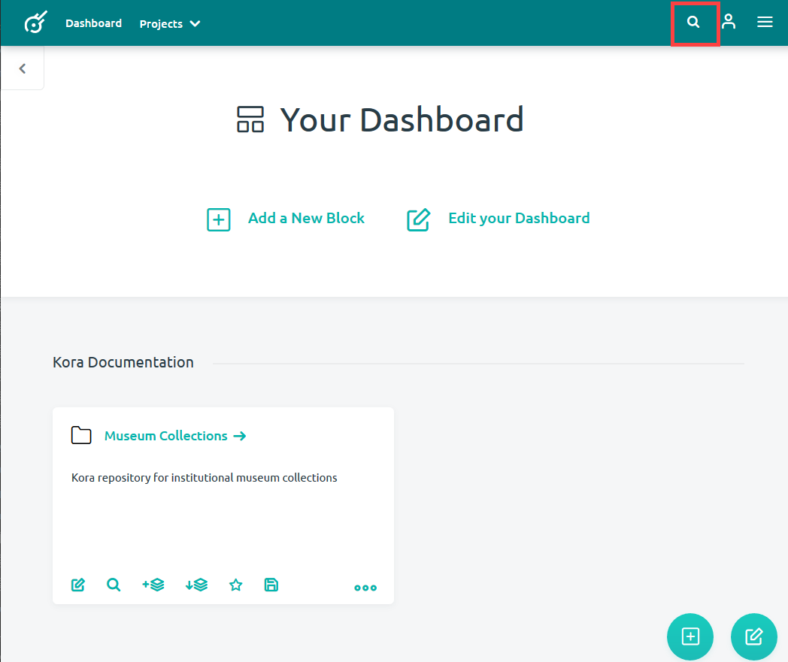
-
A search bar will appear which will allow you to enter keywords found within the form title you are searching for.
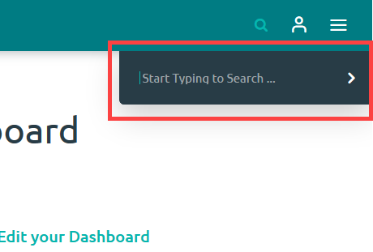
-
If you are able to enter the name of your form, the option to Go to Form will be made available under the search bar. Simply click on your form name to go to that form.
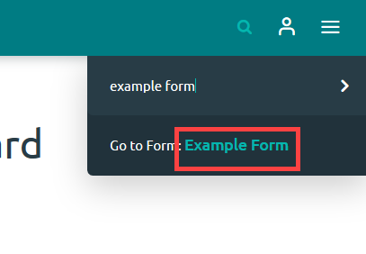
-
Sometimes you will not know the exact name of the form, however. In these cases, if you get close to the spelling of the form, Kora may still be able to provide options for you to jump to.
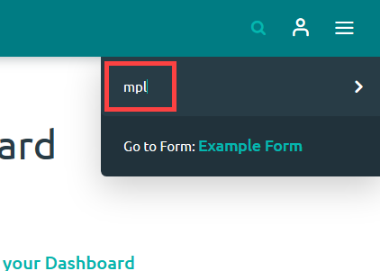
-
If Kora still is not able to find your form in the initial typing into the search bar, then you will have to click the right-facing arrow in the search bar to perform a proper search.
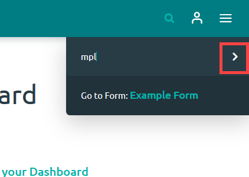
-
This search will examine records, forms, fields and projects for any results which may match your search. In this case, by clicking on the Forms() tab, you'll be able to see which forms match your search.
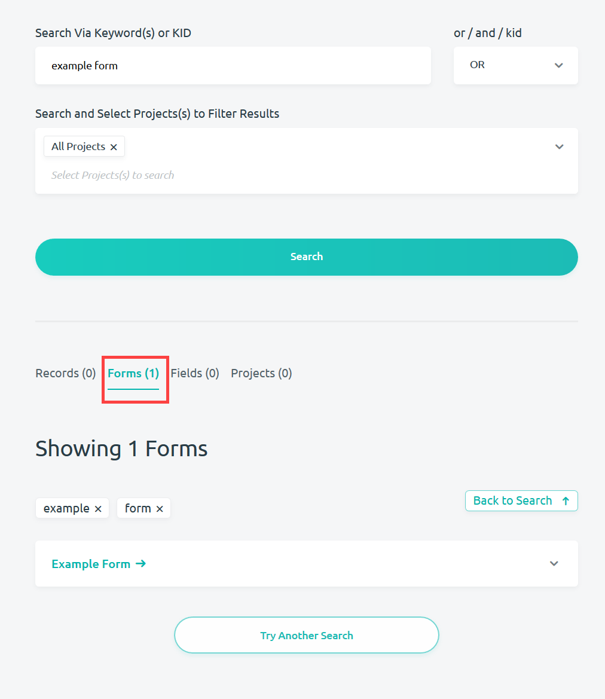
Searching for a Form within a Project
If you know what project a form may be in, it might be easier to search within a particular project for a form. There are a couple of ways to do this. The first option is to use the Find a Form search option located on the Project Home page.
-
Navigate to the project you want to search and click on the Find a Form search bar.
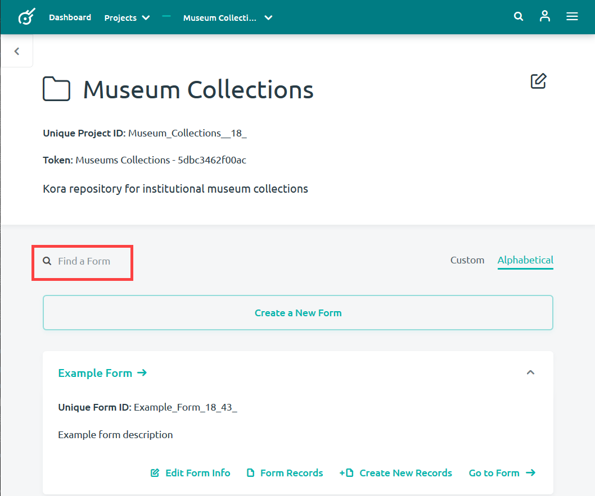
-
Entering the title of your form will eliminate all forms that do not match its spelling
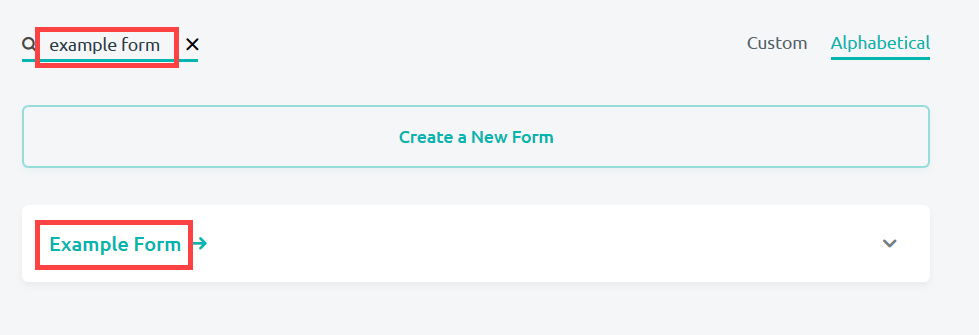
-
You are able to use a fewer amount of characters to broaden the possible forms that you will find.
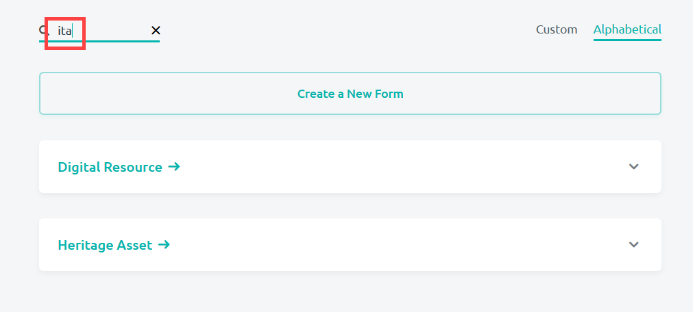
The other option for searching for a form involves jumping to a form using the navigation bar. This will create a list of forms that you can peruse to see if you find the form that you are looking for.
-
Go to the arrow next to your project name in the navigation bar, or open up the dropdown menu to the very right.
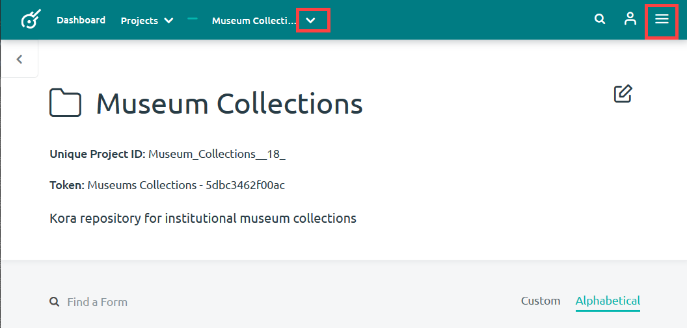
-
Select Jump to Form + and scroll through the possible forms. After locating your form, click on the name of your form to jump to that form.
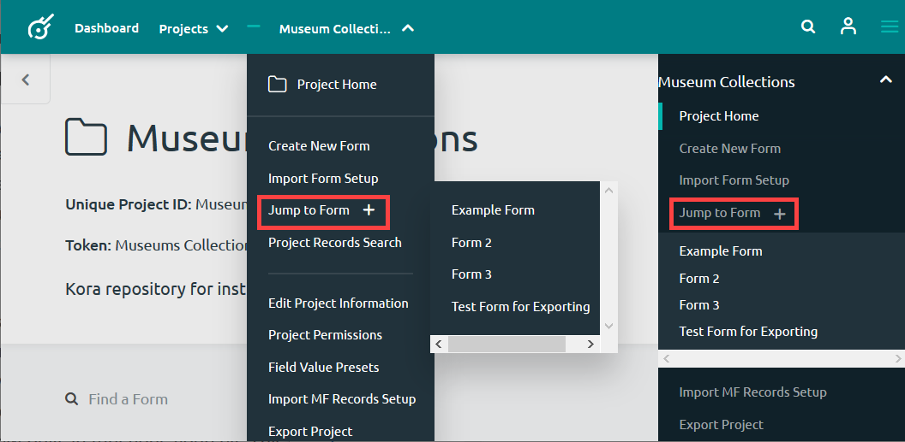